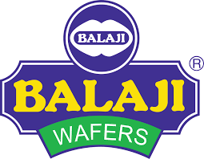

I'm Hemang Joshi — I build dashboards that tell stories, models that reveal risk, and platforms that create real impact.
I hold a BBA (Hons.) with a CGPA of 9.06 from Marwadi University and I'm currently pursuing my MBA in Business Analytics at Woxsen University, Hyderabad (2025–2027).
My approach is simple: data should drive decisions, not decorate presentations. Whether it's a GARCH model for mutual fund volatility, a Power BI dashboard analyzing 8,000+ records, or a solar energy business plan — I bring rigor and clarity to every project.
Fluent in English, Hindi, and Gujarati. Outside the numbers, I compete in volleyball and chess — both demand the same skill: reading patterns and acting decisively.

Immersed in end-to-end FMCG operations across 5 core departments, applying analytical techniques to real business problems in a leading snacks company.
Coordinated logistics and protocol for national and international delegates at a major business summit.
Analyzed AI exposure across top 10 occupational groups to quantify job displacement risk at the state level — identifying Minnesota as highest-risk state at 17% using heat-map visualizations and interactive Power BI dashboards.
Major Research Project submitted to Faculty of Management Studies, Marwadi University. Analyzed volatility of India's top 10 NSE/BSE blue-chip companies (Jan–Dec 2024) using GARCH(1,1) econometric modeling — confirming that 9 out of 10 funds exhibit high volatility with measurable risk persistence.
Full entrepreneurial business plan for Dharm Solar (LLP), a solar panel manufacturing & assembly startup based in Sapar, Gujarat — with a ₹80 Crore revenue target in Year 1 and ₹125 Crore by FY2026–27.
Research-backed digital platform connecting manufacturers, customers and local tailors to solve poor garment fit in India's ethnic fashion market through a centralized technology hub.
Open to internships, collaborations, and analytics roles.
I respond within 24 hours.